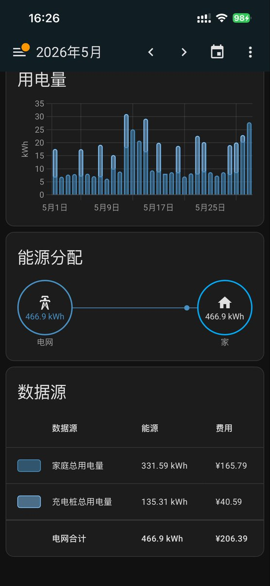
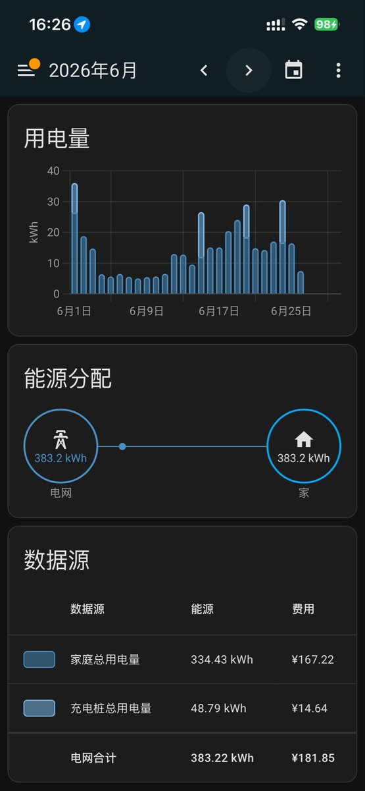
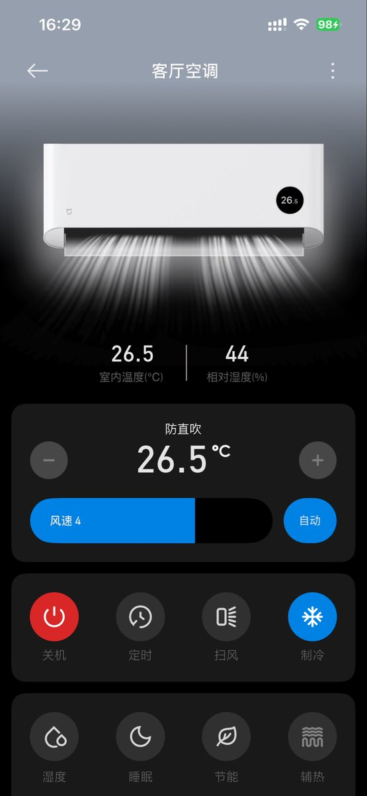

孙悟元 (つ≧▽≦)つ
@wuyuandev
@MikuMikuyukis @Eivor_Koy 虽然但是，并非略微偏上
是非常上上上了😭



yuki
@MikuMikuyukis
@Eivor_Koy 我5月和6月两个月开空调的用电量和价格，第一行是家庭用电量，第二行是电动汽车充电桩用电量。顺带一提我的月收入8000cny，完全可以轻松负担这些费用。而我的月收入在我的城市只能说是中等略微偏上。某些人还是别刻意造中国的谣了，这并不会让你们的生活变得更好 https://t.co/RO8fNA6y5n